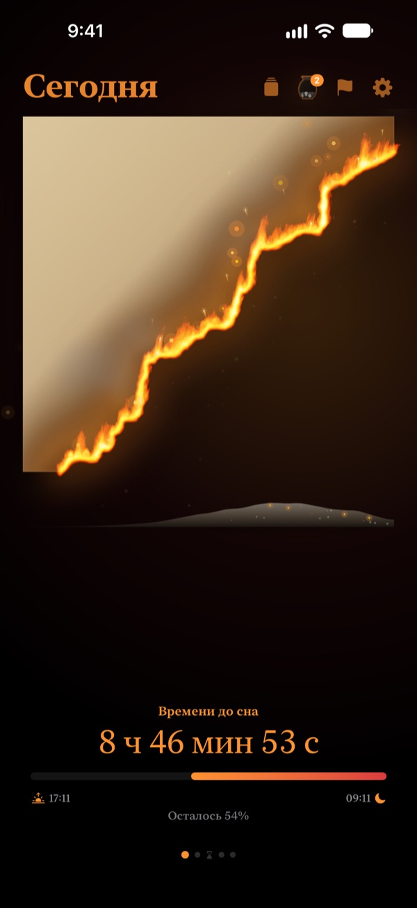
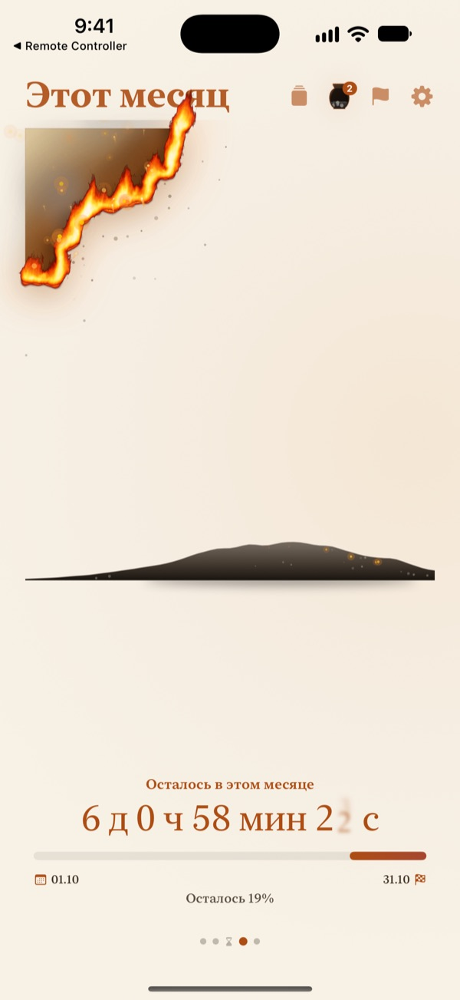
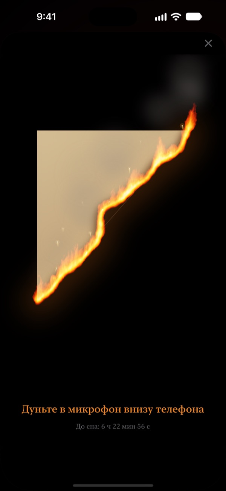
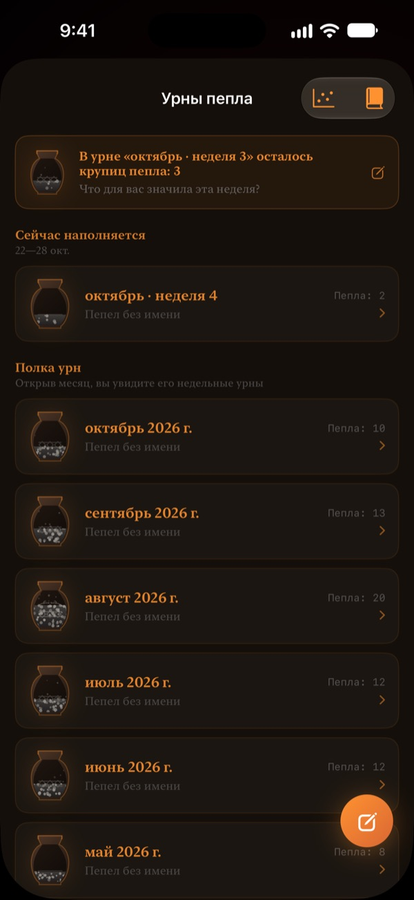

Остаток дня
сгорает у вас на глазах
Вечер, который в цифрах кажется безобидным, выглядит иначе, когда это горящий пергамент. За полчаса до сна подуйте на экран, погасите огонь и закройте день.
Горящий пергамент, ритуал задувания и записи бесплатны.

Попробуйте задуть
Передвиньте время ближе ко сну, затем удерживайте кнопку или подуйте в микрофон.
Бывало, что внезапно уже полночь?
Поужинали, присели на минутку, а день уже прошёл. Цифры на часах каждый вечер выглядят одинаково, поэтому не чувствуется, как уходит время. Горящий пергамент показывает остаток дня как сгорающий лист, и вы замечаете это до того, как вечер исчезнет.
День, неделя и год сгорают
С момента пробуждения и до отбоя пергамент медленно горит. Так же видно, сколько осталось от этой недели, месяца и года.
Добавьте цель с датой как дедлайн, и обратный отсчёт пойдёт рядом.

Задуйте день
За 30 минут до сна подуйте на горящий пергамент, чтобы погасить огонь. Учитывается только сила дыхания, ничего не записывается.
Оставшийся осколок сохраняется. Переверните его и напишите на обороте строчку о сегодняшнем дне.

Прошедшее время оседает пеплом
Подведите итог дня одной строкой и поставьте точку на графике с двумя осями: на что ушло это время. Записи копятся в урнах пепла за неделю и месяц, их можно перечитать в Книге записей.
Поток пепла показывает, куда ушло время, с графиком распределения и календарём угольков.

Три шага, чтобы начать
- 1
Задайте подъём и отбой
Нажмите на шестерёнку справа вверху. Пергамент загорается и гаснет по этому расписанию.
- 2
Выберите период
Листайте между днём, неделей, месяцем и годом или скройте лишние страницы в настройках.
- 3
Добавьте виджет
На экране «Домой» или на экране блокировки остаток времени виден без открытия приложения.
Где видно оставшееся время
- День
- От пробуждения до отбоя
- Неделя · Месяц · Год
- Сколько осталось от этой недели, месяца и года
- Свободное время
- Пергамент недели горит только в часы, которые вы оставили для себя (Pro)
- Дедлайны
- Время до даты цели. Один бесплатно
- Виджеты экрана «Домой»
- Пергамент дня маленький, средний и большой. Неделя, месяц, год и дедлайны маленькие и средние
- Виджеты экрана блокировки
- Круглый, прямоугольный и строкой
- Dynamic Island · Live Activity
- За час до сна или весь день. Выбирается или отключается в настройках
Разверните Dynamic Island, чтобы увидеть горящий пергамент с полным отсчётом.
Пергамент бесплатен. Pro хранит больше.
Бесплатно
- Пергаменты дня, недели, месяца и года
- Задувание пламени и сбор осколков
- Записи в одну строку, урны пепла и Книга записей
- Утренняя проверка, по желанию с данными сна из «Здоровья»
- Виджеты для экрана «Домой» и блокировки, Dynamic Island
- Один дедлайн
Горящий пергамент Pro
- Сжигать только своё свободное время
- Темы: Лунная бумага ханджи, Селадон, Закат
- Пламя: Степной пожар, Угли, Бенгальский огонь
- Делиться осколками в виде карточек и постеров
- Экспорт Книги записей в PDF
- Поток пепла за двенадцать месяцев
- Неограниченные дедлайны
Не подписка. Одна покупка навсегда, включая все будущие функции Pro.
Новое устройство? Нажмите «Восстановить покупки» в настройках.
Частые вопросы
Виджет показывает другое время, чем приложение.
iOS не перерисовывает виджеты экрана «Домой» каждую секунду. Откройте приложение, и они синхронизируются. Посекундный отсчёт показывают Dynamic Island и Live Activity на экране блокировки.
Дую, а огонь не гаснет.
Задуть можно только за 30 минут до сна. Проверьте, что доступ к микрофону разрешён, и ровно подуйте около секунды на микрофон внизу iPhone. Короткого звука недостаточно.
Мой голос записывается?
Нет. Проверяется только сила выдоха. Звук не записывается и не сохраняется.
Что видно, пока я сплю?
После отбоя появляется горящее сердце и показывает, какая часть ночи прошла до подъёма. Утром приложение спросит, легли ли вы вовремя; если поздно, сегодняшний пергамент начнётся обугленным на это время. Если подключить «Здоровье», оно возьмёт записанное время засыпания без вопросов.
Когда приходят уведомления?
За час до сна. Если их нет, проверьте Настройки > Уведомления > Горящий пергамент.
Сильно ли садится батарея?
Отсчёт в приложении обновляется каждую секунду, но виджеты iOS обновляет в экономном режиме, так что влияние небольшое.
Где хранятся мои данные?
Время подъёма и отбоя, дедлайны, записи и урны остаются на вашем устройстве. Разработчик получает только анонимную статистику использования, отчёты о сбоях и отзывы, которые вы сами отправите. Никакой рекламы и отслеживания.
Pro оформляется как подписка?
Нет. Вы платите один раз и пользуетесь всегда. На новом устройстве нажмите «Восстановить покупки» в настройках.
Ошибки, идеи и другие вопросы: пишите на leeo@kakao.com.